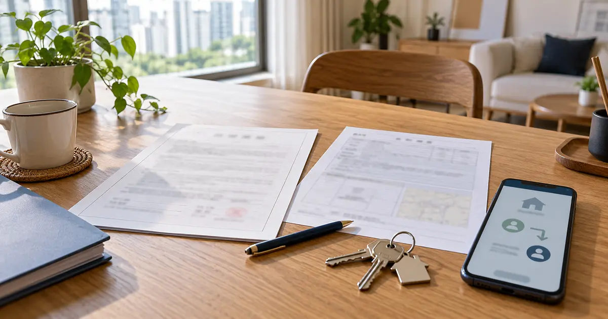
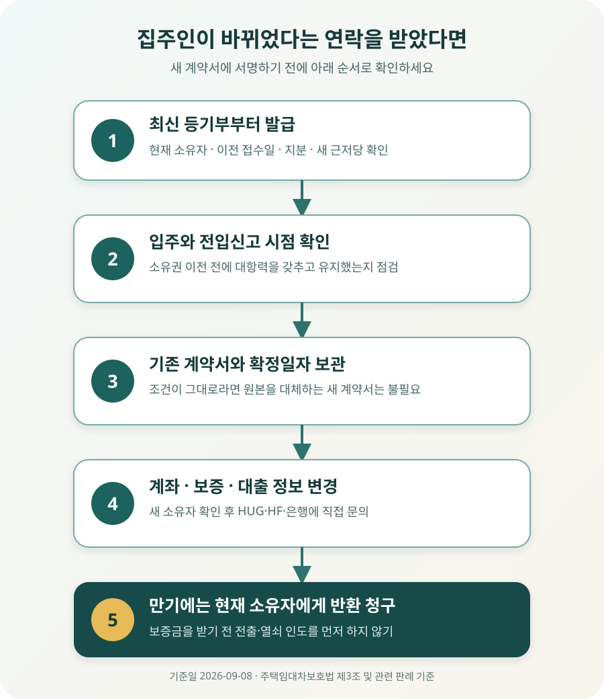

집주인이 바뀌면 전세계약서를 다시 써야 할까?

집주인이 바뀌었다는 이유만으로 전세계약서를 새로 쓸 필요는 없습니다. 주택을 인도받고 전입신고를 마쳐 대항력을 갖춘 임차인이라면, 새 소유자가 임대인의 지위와 보증금 반환 의무를 법에 따라 승계하는 것이 원칙입니다. 기존 계약서 원본과 확정일자 자료는 그대로 보관하고, 등기부에서 소유권 이전을 확인한 뒤 임대료 입금계좌와 전세보증 가입정보를 정리하세요.
대항력이 있다면 새 집주인이 계약을 이어받습니다
전세로 살던 집이 매매됐다는 연락을 받으면 “내 계약은 없어지는 건가”, “새 집주인과 다시 계약해야 하나”부터 걱정하게 됩니다. 결론부터 말하면 현재 계약기간은 소유자가 바뀌어도 그대로 이어지는 것이 원칙입니다.
주택임대차보호법 제3조는 임차인이 주택을 인도받고 주민등록을 마치면 그다음 날부터 제3자에게 임대차의 효력을 주장할 수 있도록 정합니다. 같은 조 제4항은 임차주택의 양수인이 임대인의 지위를 승계한 것으로 본다고 규정합니다. 따라서 이 요건을 갖춰 계속 거주하는 임차인이라면 집을 산 사람이 계약서에 별도로 서명하지 않았더라도 임대인의 지위를 이어받습니다.
여기서 중요한 것은 계약서를 쓴 날짜만이 아닙니다. 실제로 주택을 넘겨받았는지, 전입신고를 언제 마쳤는지, 그 상태를 계속 유지했는지를 함께 봅니다. 예를 들어 9월 1일 계약서를 쓰고 9월 20일 입주·전입할 예정인데 9월 10일 다른 사람에게 소유권이 넘어갔다면, 계약 당시 예상했던 보호관계와 달라질 수 있습니다. 입주 전 소유권이 바뀌었거나 잔금일과 이전등기가 맞물린 경우에는 돈을 더 보내기 전에 등기와 계약 당사자를 다시 확인해야 합니다.
“집주인이 바뀌었다”는 문자만 믿고 돈을 보내면 안 됩니다
기존 집주인이나 중개사가 소유권 변경 사실을 알려 왔다면 최신 등기사항증명서부터 발급하세요. 인터넷등기소나 등기소에서 해당 집의 등기를 확인하고, 갑구에 적힌 현재 소유자 이름과 소유권 이전 접수일, 지분 전부가 넘어갔는지를 봅니다. 공동명의라면 안내한 사람 한 명만 확인해서는 부족합니다.
| 확인할 자료 | 무엇을 볼까? | 확인되지 않으면 |
|---|---|---|
| 최신 등기사항증명서 | 현재 소유자, 이전등기 접수일, 지분, 새 근저당 등 | 임대료 계좌 변경이나 새 계약서 서명을 미루고 재확인 |
| 기존 계약서 원본 | 보증금, 기간, 임대료, 특약, 확정일자 | 스캔본·확정일자 부여현황 등 보관자료 확인 |
| 소유자 변경 안내 | 새 소유자 연락처, 임대료 계좌, 보증금 승계 확인 | 등기상 소유자 또는 위임관계를 확인한 뒤 연락 |
| 전세보증·대출 서류 | 임대인 변경 신고나 조건변경이 필요한지 | 가입기관과 대출은행에 직접 문의 |
등기부에는 매매계약을 했다는 사실이 아니라 소유권 이전등기가 반영된 결과가 표시됩니다. “매수인이 곧 새 집주인”이라는 설명만 듣고 등기 전부터 매수인 계좌로 월세를 보내거나 계약서를 다시 쓰는 것은 피하는 편이 안전합니다. 반대로 이전등기가 끝났는데 예전 집주인 계좌로 계속 보내는 것도 분쟁을 만들 수 있으니, 확인한 날짜와 등기부 발급번호, 안내 메시지를 함께 보관하세요.

계약이 끝나면 새 집주인에게 보증금을 청구하는 것이 원칙입니다
대항력 있는 임대차에서 소유권이 넘어가면 보증금 반환채무도 새 소유자에게 이전됩니다. 대법원 2021다251929 판결은 양수인이 소유권과 결합해 임대차의 권리·의무를 포괄적으로 승계하고, 원칙적으로 종전 임대인은 임대차 관계에서 벗어나 보증금 반환채무를 면한다고 설명합니다. 계약 만료 때 현재 소유자인 새 집주인에게 집을 인도하면서 보증금 반환을 요구하는 것이 기본인 이유입니다.
예를 들어 보증금 3억 원인 전셋집에 입주해 전입신고와 확정일자를 갖춘 뒤 집이 팔렸다고 해보겠습니다. 기존 계약은 남은 기간 동안 이어지고, 만기에 보증금을 내줄 책임은 원칙적으로 새 소유자에게 있습니다. 매매대금 정산 과정에서 예전 집주인과 새 집주인이 보증금을 어떻게 계산했는지는 두 사람 사이의 문제이지, 그것만으로 세입자의 보증금 액수가 줄어들지는 않습니다.
다만 새 집주인의 자금사정이나 새로 설정된 권리가 불안하다면 “법이 승계시켜 주니 아무것도 볼 필요가 없다”는 뜻은 아닙니다. 등기부에서 근저당·압류 등 새 권리도 함께 보고, 보증 가입 상태와 만기 반환 계획을 확인해야 합니다. 만기인데 보증금을 받지 못한 채 이사해야 한다면 전출부터 하지 말고 임차권등기명령 등 보전절차를 검토하세요.
새 집주인에게 계약 승계를 원하지 않는다고 할 수 있을까?
대법원은 임차인이 임대인 지위의 승계를 원하지 않는 경우, 임차주택이 넘어간 사실을 안 때부터 합리적으로 볼 수 있는 기간 안에 이의를 제기해 종전 임대인과의 관계를 유지할 수 있다고 봅니다. 하지만 이를 “집이 팔리면 세입자가 마음대로 계약을 해지하고 예전 집주인에게 즉시 보증금을 받을 수 있다”는 뜻으로 받아들이면 위험합니다.
법에는 모든 사건에 똑같이 적용되는 며칠짜리 기한이나 정해진 신고서가 없습니다. 임차인이 새 소유자를 임대인으로 인정하는 행동을 했는지, 언제 이전 사실을 알았는지, 어떤 의사를 누구에게 어떤 방식으로 밝혔는지를 구체적으로 따집니다. 실제 2021다251929 사건에서도 법원은 임차인의 후속 행동을 살펴 승계에 이의를 제기했다고 보기 어렵다고 판단했습니다. 승계를 원하지 않는 특별한 사정이 있다면 새 계좌로 임대료를 보내거나 새 집주인과 조건을 합의하기 전에 변호사 또는 주택임대차분쟁조정위원회에 즉시 상담하고, 의사표시는 내용증명처럼 도달을 증명할 수 있는 방식으로 하세요.
변경 확인서를 쓰더라도 기존 계약서는 없애지 마세요
새 집주인과 계약서를 처음부터 다시 쓰면 마음이 놓일 것 같지만, 계약기간·보증금·특약을 새로 적는 과정에서 원래 합의와 달라질 수 있습니다. 기존 계약의 효력이 법률상 승계됐다면 새 계약서가 승계의 필수조건은 아닙니다. 소유자 변경 사실을 문서로 남기고 싶다면 원본을 대체하는 새 계약서보다 짧은 확인서나 추가 합의서를 검토할 수 있습니다.
확인서에는 현재 집의 표시, 기존 계약 체결일과 보증금·기간, 소유권 이전일, 새 임대인의 성명과 연락처, “기존 임대차계약의 나머지 조건을 그대로 승계한다”는 취지를 명확히 적습니다. 기존 계약서와 확정일자 효력을 유지하기 위한 확인 문서임을 밝히고, 기존 계약서 원본은 세입자가 계속 보관하세요. 서명하는 사람이 등기상 소유자 본인인지도 확인해야 합니다.
월세 계좌를 바꿔 달라는 연락은 이렇게 확인하세요
보증부월세라면 소유권 이전 뒤 임대료를 받을 사람도 달라집니다. 등기상 소유권이 넘어간 것을 확인하고, 새 소유자 명의 계좌와 연락처를 문서로 안내받는 것이 가장 분명합니다. 새 집주인의 가족이나 법인 관계자 등 제3자 명의 계좌를 안내받았다면 새 소유자가 그 계좌로 지급하라고 요청했다는 증거와 계좌 명의자와의 관계를 남겨 두세요.
계좌가 불분명하다고 월세를 계속 내지 않으면 연체 문제로 번질 수 있습니다. 누구에게 지급해야 할지 다툼이 생겼다면 임의로 보류하거나 현금으로 건네지 말고, 계좌 확인을 요청한 메시지와 지급할 돈을 준비해 둔 기록을 남긴 뒤 변제공탁 가능성 등을 법률상담으로 확인하세요. 부동산 중개사의 계좌로 일단 보내라는 말도 소유자나 정식 위임 여부를 확인하기 전에는 따르지 않는 편이 안전합니다.
전세보증과 전세대출은 자동으로 정리됐다고 생각하지 마세요
임대차 자체는 법에 따라 승계되더라도 보증기관과 은행의 고객정보까지 자동으로 모두 바뀌는 것은 별개 문제입니다. 보증서나 대출약정에 임대인 변경 통지·조건변경 절차가 있는지 확인해야 합니다.
한국주택금융공사(HF)의 전세보증금반환보증 조건변경 안내는 임대인 변경을 조건변경 사유로 명시하고 신청 절차와 서류를 안내합니다. 주택도시보증공사(HUG)도 전세보증 업무에서 변경·갱신·해지 절차와 보증조건변경 신청서를 운영합니다. 어느 기관의 상품인지, 대출과 보증을 은행에서 함께 처리했는지에 따라 접수창구와 서류가 다르므로 다음과 같이 확인하세요.
- 보증서부터 확인 — HUG·HF·SGI 등 보증기관, 보증번호, 보증기간과 임대인 정보를 확인합니다.
- 가입기관에 직접 연락 — “소유권 이전등기가 끝났고 임대인이 바뀌었다”고 알린 뒤 조건변경 대상과 기한을 묻습니다.
- 등기부와 변경 증빙 제출 — 기관이 요구하는 최신 등기사항증명서, 기존 계약서, 새 임대인 정보 등을 준비합니다.
- 대출은행에도 확인 — 전세대출 약정의 임대인 정보나 질권·채권양도 통지에 영향이 있는지 별도로 묻습니다.
- 접수 결과 보관 — 상담일시, 접수번호, 변경된 보증서나 안내문을 만기까지 보관합니다.
특히 새 임대인이 법인이거나 신탁등기가 있는 경우에는 개인 소유 주택과 확인사항이 달라질 수 있습니다. 보증기관 안내에서 별도 조치를 요구할 수 있으므로 일반적인 개인 간 매매와 같다고 넘기지 마세요.
새 집주인이 샀다는 이유만으로 당장 나가야 하는 것은 아닙니다
소유권이 바뀌어도 진행 중인 임대차기간이 자동으로 끝나지는 않습니다. 새 집주인이 “내가 들어와 살겠다”고 말하더라도 현재 계약의 만료일 전까지 아무 때나 퇴거를 요구할 수 있는 것은 아닙니다. 계약기간 중 조기 퇴거에 합의한다면 이사일, 보증금 반환일, 이사비나 중개보수 부담을 말로만 정하지 말고 서면에 남겨야 합니다.
다만 계약갱신요구권을 행사할 시점에는 사정이 달라질 수 있습니다. 대법원 2021다266631 판결은 법에서 정한 갱신거절 기간 안에 임대인 지위를 승계한 새 소유자도 실제 거주 사유로 갱신을 거절할 수 있다고 판단했습니다. “집이 팔려도 무조건 2년 더 살 수 있다”거나 “새 집주인이면 언제든 내보낼 수 있다”는 설명은 둘 다 정확하지 않습니다. 현재 계약 만료일, 갱신요구권 행사 여부, 소유권 이전 시점과 새 소유자의 실제 거주 사유를 함께 봐야 합니다.
연락을 받은 날부터 이 순서로 확인하세요
- □ 최신 등기사항증명서에서 현재 소유자와 이전 접수일, 지분을 확인했다.
- □ 새로운 근저당권·압류·신탁등기 등 권리 변동도 함께 확인했다.
- □ 주택 인도와 전입신고를 언제 갖췄는지, 현재도 유지하는지 확인했다.
- □ 기존 계약서 원본과 확정일자 자료, 보증금 이체내역을 따로 보관했다.
- □ 새 집주인의 이름·연락처와 임대료 입금계좌를 문서로 안내받았다.
- □ 제3자 계좌라면 새 소유자의 지급 지시와 계좌 명의자 관계를 확인했다.
- □ 전세보증 가입기관과 대출은행에 임대인 변경 절차를 문의했다.
- □ 보증금 증액이나 기간 변경이 없다면 성급하게 새 계약서를 쓰지 않는다.
- □ 조기 퇴거를 합의한다면 보증금 반환일과 비용 부담을 서면으로 정한다.
- □ 승계에 이의를 제기할 사정이 있다면 행동하기 전에 법률상담을 받는다.
공식 자료 및 참고자료
- 국가법령정보센터 — 주택임대차보호법 제3조(대항력 등)
- 국가법령정보센터 — 주택임대차보호법 제3조의2(보증금의 회수)
- 국가법령정보센터 — 주택임대차보호법 제6조의3(계약갱신 요구 등)
- 국가법령정보센터 — 대법원 2021. 11. 11. 선고 2021다251929 판결
- 국가법령정보센터 — 대법원 2022. 12. 1. 선고 2021다266631 판결
- 한국주택금융공사 — 전세보증금반환보증 조건변경 안내
- 주택도시보증공사 안심전세포털 — 전세보증 신청서류·보증조건변경신청서
정보 기준일: 2026-09-08. 이 글은 대항력을 갖춘 일반적인 주택 임차인의 소유자 변경 상황을 설명한 정보이며, 개별 사건에 대한 법률 자문이 아닙니다. 입주·전입 전 소유권 변경, 공동소유, 신탁등기, 경매·공매, 법인 임대인, 보증금 증액, 체납·압류가 얽힌 경우에는 결론과 필요한 조치가 달라질 수 있습니다. 계약서와 최신 등기사항증명서를 지참해 변호사, 법률구조기관, 주택임대차분쟁조정위원회 또는 가입한 보증기관에 확인하세요.
집주인이 바뀌었을 때 같이 확인할 도구
- 전월세 계약 체크리스트등기부·대항력·확정일자와 특약 확인
- 전세가율 계산기현재 시세와 보증금 비율 다시 점검